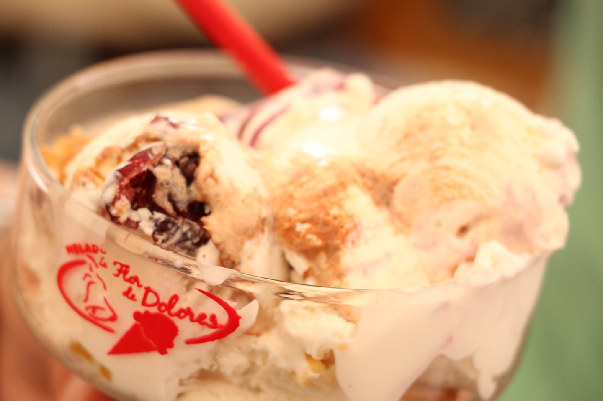

NIEVES DE DOLORES HIDALGO

DOLORES ES UNA CIUDAD LLENA DE HISTORIA, LEYENDAS Y TRADICIONES, PUES FUE AQUÍ DONDE EL CURA MIGUEL HIDALGO Y COSTILLA INICIÓ LA LUCHA DE LA INDEPENDENCIA.
ENTRE MUCHAS OTRAS CUALIDADES, LA GASTRONOMÍA DE ESTA CIUDAD ENTRAÑABLE ES MUY PECULIAR Y VARIADA, COMO LAS FAMOSAS NIEVES DE DOLORES HIDALGO, PUESTO QUE LAS HAY DE EXÓTICOS SABORES COMO: CHICHARRÓN, COCTEL DE CAMARONES, FRIJOLES NEGROS, CHILE RELLENO, ENTRE OTROS.
SI VIENES DE VISITA A DOLORES HIDALGO, NO DEBES PASAR POR ALTO ESTAS FAMOSAS Y TRADICIONALES NIEVES.